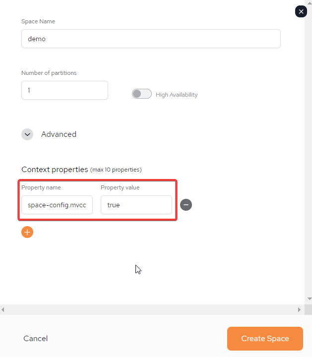

Multiversion concurrency control (MVCC) is a concurrency control method used to provide a concurrent and consistent view of data distributed across partitions.
Processing a large number of simultaneous transactions in Smart DIH requires an extreme write throughput that cannot be paused. In order to maintain transactions in the platform, Space objects must not be locked. The MVCC mechanism provides an elegant solution, allowing massive updates while maintaining consistency in the Space with the systems of record. In this manner, the ACID properties of transactions are maintained, ensuring the consistency and integrity of the database before and after each transaction, even in highly available distributed systems.
For more information about the MVCC mechanism and how it is used in Smart DIH, read our blog on How to Achieve ACID Compliance on Distributed, Highly Available Systems (search for MVCC).
The configuration settings for MVCC can be modified to tweak the impact on memory consumption.
| Name | Type | Default Value | Description |
|---|---|---|---|
| space-config.mvcc.enabled | Boolean | false | MVCC is enabled for the Space |
| space-config.mvcc.space-config.mvcc.historical_entry_lifetime | Integer | 5 | Time limit for holding entry version in the cache. Main measure for “should particular entry version be cleaned or not“ |
| space-config.mvcc.historical_entry_lifetime_timeunit | TimeUnit | m | Measure of time limit (millis(ms), seconds(s), minutes(m)…) |
| space-config.mvcc.historical_entries_limit | Integer | 5 | Max allowed limit for historical entries number per UID. CANNOT BE 0. Data lifetime take precedence over this criteria. (if number in cache < limit, but some entries are too old - purge them) |
| space-config.mvcc.fixed_cleanup_delay_millis | Integer | 1000000 | Timeout between cleanup iterations. To enable dynamic delay based on previous cleanups set to 0. |
MVCC cannot be configured for a Space that is already Active. To enable MVCC a Space has to be created from new.
To enable a Space for MVCC, perform the following:
Add a new Space by following steps as outlined in the User Guide: SpaceDeck - Spaces - Adding a Space
In the Adding a New Space Parameters section, to enable MVCC add the following Context Properties/Property Name: space-config.mvcc.enabled=true

To change any of the other default parameters, additional Properties Names should to be added.
Once completed, click Create Space.
The MVCC enabled Space can be queried using the JDBCv3 compliant RESTful Service’s or using the Postgres SQL compliant data-gateway. To gain a consistent view, queries should be be part of an explicit transaction. Non-transactional queries will return eventually consistent data.
For developers, The MVCC enabled Space can also be queried using the Java proxy APIs - limited to basic APIs such as single operations by ID (write, read, take, update), read-multiple operations, read/take with template matching. Developers can also utilize the SQL JDBCv3 driver or SQLQuery Java API.
MVCC Space operations are required to be transactional. This is to ensure that committed data is consistently reflected when fetched. A read operation without transaction is only allowed when specifying the READ_COMMITTED isolation level modifier. Transactional reads can be performed with isolation levels such as: DIRTY_READ, REPEATABLE_READ, or the default READ_COMMITTED modifier for MVCC.
MVCC is limited to All-in-cache and is not supported for other cache policies such as LRU, Tiered-Storage and cache topologies such as: Local Cache/View.
Secondary unique index will not be allowed.
More than one data pipeline per table is not supported.
Throughput is impacted by a decrease of 5-7%.
RAM is impacted by an increase of 90-150%.